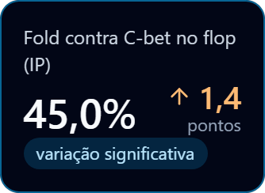

4 / 6
Field Trends
REAL OU
VARIAÇÃO NORMAL?

Gráfico: C-bet no flop (IP) %, com a sua faixa de variação normal
Cada stat traz a faixa de variação normal do próprio field. Dentro da faixa, é oscilação. Fora, o field mudou.

Fold to c-bet IP: +1,36 pp. Faixa: ± 0,77 pp. Mudança real.
2T25 → 2T26 (em curso)